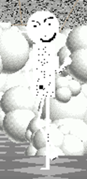
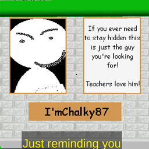

"I'mChalky87" (or just "IC87") is a clone of Garrett, he appears as one of the frown frames in "Jumps Basics"(/"JB"). He returns in "Baldi's Basics Plus" as his own character.
Aliases
I'mChalky87, IC87.
Appearance
I'mChalky87 appears as an edited version of "Garrett", he is almost entirely white outside of his eyebrows, mouth, and pupils.
Gallery
JB
BB+


Trivia
I'mChalky87 is made solely out of chalk.
I'mChalky87 can regenerate his body.
I'mChalky87 is pretty well liked by most of the teachers as he is very useful.
I'mChalky87 likes being useful as it gives him meaning outside of just being another Garrett clone.
In Baldi's Basics Plus, he runs around and will randomly make a dust cloud appear.
He is one of the only BB+ characters to lack audio.
Poster Description
"If you ever need to stay hidden this is the guy you're looking for! Teachers love him!"